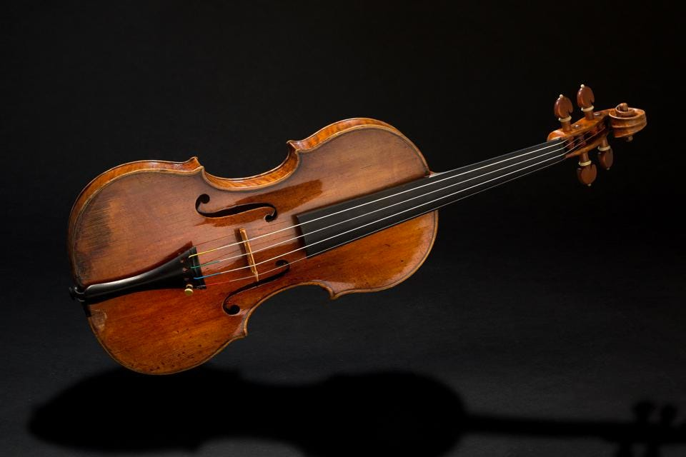
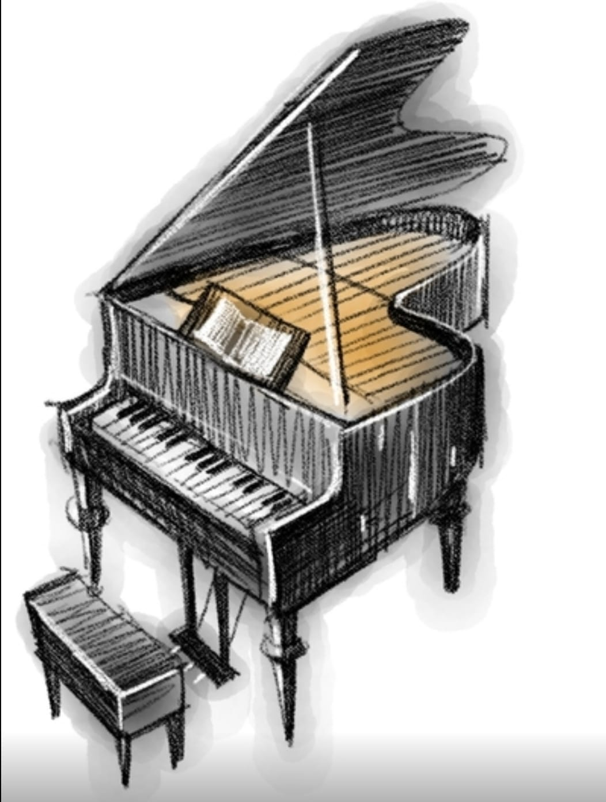
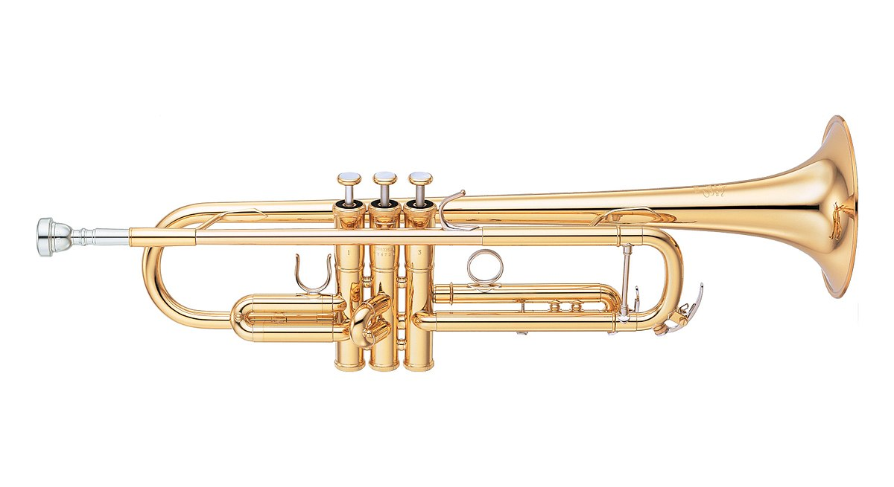

The violin is the smallest and highest pitched string instrument typically used in western music. It is probably the best known and most widely distributed musical instrument in the world.
The piano was invented in Italy by Bartolomeo Cristofori around the year 1700 (the exact year is uncertain). The first time the piano was played in a public concert in London was in 1768 when it was played by Johann Christian Bach. Pianos can have over 12,000 individual parts, supporting six functional features: keyboard, hammers, dampers, bridge, soundboard, and strings.
The guitar is an ancient and noble instrument, whose history can be traced back over 4000 years. The history of the guitar generally goes back to two instruments, the oud and the lute, which predate written history

The trumpet is characterized by its striking, triumphal sound and by the fact that it boasts the highest register of all the brass instruments. The earliest trumpets date back to 1500 BC and earlier.
